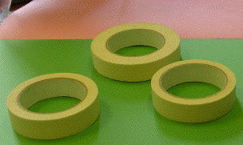
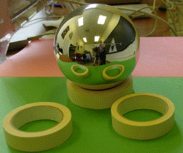
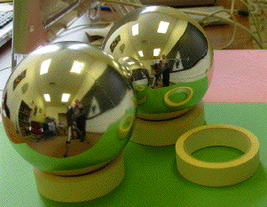
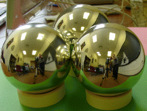

Begin by placing three rolls of masking tape in an equilateral triangular array on a table top.
These rolls of tape serve to immobilize the Christmas decorations.
Place a Christmas decoration on one of the rolls of tape.
|  |  |
Place a Christmas decoration on the second roll of tape, adjusting the locations of the rolls of tape so the two ornaments just touch.
Place a Christmas decoration on the third roll of tape, adjusting the locations of the rolls of tape so the three ornaments just touch.
|  |  |
Return to Procedure.